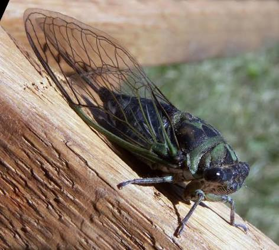
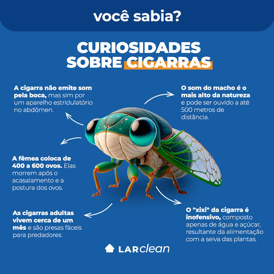

As cigarras passam a maior parte de suas vidas debaixo da terra como ninfas, alimentando-se da seiva de raízes de plantas por anos (algumas espécies norte-americanas chegam a viver 13 ou 17 anos sob a terra). Quando finalmente emergem, passam por uma metamorfose e vivem apenas algumas semanas na fase adulta para se reproduzir.

O som característico emitido pelas cigarras machos não é feito pela garganta nem pelo roçar das asas, mas sim por um órgão especial no abdômen chamado tímbalo. Músculos internos curvam e estalam rapidamente essa estrutura de quitina, produzindo um canto alto que serve para atrair as fêmeas e espantar predadores

Existe o mito popular de que as cigarras "cantam até estourar", mas o exúvia (a casca vazia encontrada nas árvores) é apenas o esqueleto externo abandonado após a última muda de pele. Na natureza, as cigarras desempenham um papel vital: aeram o solo enquanto são ninfas, servem de alimento para diversos pássaros e animais, e enriquecem o solo com nutrientes ao morrerem.